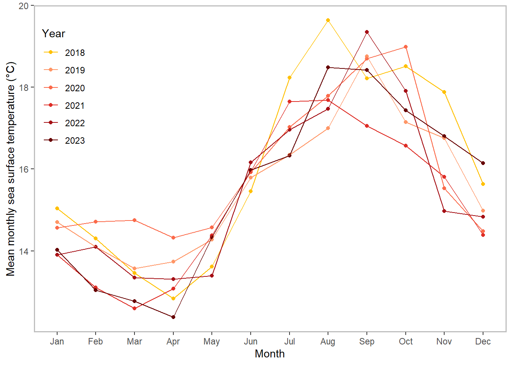
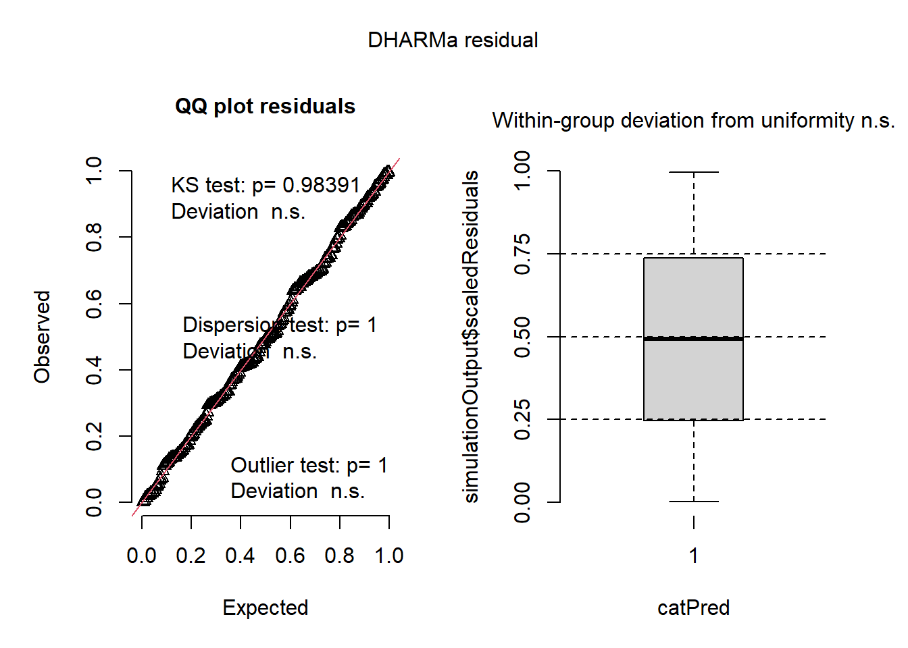

library(tidyverse) # reading in packages
library(here)
library(gt)
library(flextable)
library(janitor)
library(readxl)
library(magick)
library(MuMIn)
library(DHARMa)
library(ggeffects)
library(fs)
sst <- read.csv("C:/Users/tuthi/OneDrive/Documents/github/ENVS-193DS_spring-2025_final/data/SST_update2023.csv") # reading in data file for problem 2
nest_boxes <- read.csv("C:/Users/tuthi/OneDrive/Documents/github/ENVS-193DS_spring-2025_final/data/occdist.csv") # reading in data file for problem 3ENVS-193DS-Final
link to your Github repo: https://github.com/Henji15/ENVS-193DS_spring-2025_final.git
1. Research writing
a. Transparent statistical methods
[In part 1, they used a pearson correlation test. In part 2, they used an ANOVA test.]
b. More information needed
[The first test would be Tukey Honestly Significantly Different (Tukey HSD) test. It compares which sources are actually different when you compare them (like urban land, atmospheric deposition, fertilizer, wastewater treatment, and grassland’s average nitrogen load (kg year⁻)). Another test would be calculating the effect size shows how much the grouping variable explains the response variable (how much the source explains the average nitrogen load (kg year⁻¹)). An effect size for ANOVA would help add context to assess if the differences between the sources are biologically meaningful.]
c. Suggestions for rewriting
[In part 1, we found a (insert effect size) relationship between distance from headwater (km) and annual total nitrogen load (kg year⁻¹) (pearson’s correlation test, r = correlation coefficient, p = 0.03, \(\alpha\) = significance level). For part 2, we found a difference (\(\eta\)² = effect size) between urban land, atmospheric deposition, fertilizer, wastewater treatment, and grassland in average nitrogen load (kg year⁻¹) (one-way ANOVA , F(among groups df, within groups df) = test statistic, p = 0.02, \(\alpha\) = significance level). On average, urban land showed (more, less…) nitrogen load (kg year⁻¹) (__ kg year⁻, % confidence interval: [lower bound, upper bound] kg year⁻¹) than atmospheric deposition (this can expanded for more variables).]
2. Data Visualization
a. Cleaning and summarizing
clean_sst <- sst |> # creating a new dataframe
clean_names() |> # cleaning up data frame
filter(year(date) >= 2018 & year(date) <= 2023) |> # setting up the range of years that I want
mutate(
date = as.Date(date), # converts to date format in R
year = year(date), # adds new column for year and extracts year part from each date column
month = month(date, label = TRUE, abbr = TRUE) # creates a new column for month and extracts month from date column, while abbreviating month name
) |>
group_by(year, month) |> # pairs up the month and year together
summarise(mean_monthly_sst = mean(temp, na.rm = TRUE)) |> # calculate mean surface temperature for each month and year group, rename column
mutate(year=factor(year)) # converts year column to factor for plottingclean_sst_ungrouped <- clean_sst |> ungroup() # treat data like regular data frame
slice_sample(clean_sst_ungrouped, n = 5) # Show 5 random rows from ungrouped data# A tibble: 5 × 3
year month mean_monthly_sst
<fct> <ord> <dbl>
1 2021 Jun 15.9
2 2019 Jul 16.3
3 2020 Oct 19.0
4 2019 Jan 14.7
5 2023 Dec 16.1str(clean_sst_ungrouped) # Show structure of ungrouped datatibble [72 × 3] (S3: tbl_df/tbl/data.frame)
$ year : Factor w/ 6 levels "2018","2019",..: 1 1 1 1 1 1 1 1 1 1 ...
$ month : Ord.factor w/ 12 levels "Jan"<"Feb"<"Mar"<..: 1 2 3 4 5 6 7 8 9 10 ...
$ mean_monthly_sst: num [1:72] 15 14.3 13.5 12.8 13.6 ...b. Visualize the data
graph <- ggplot(data = clean_sst, # choosing the data frame
aes(x = month, # selecting month data as x-axis
y = mean_monthly_sst, # selecting mean_monthly_sst as y axis
color = year, # assign color to year
shape = year, # assign shape to year
group = year)) + # assign group to year
geom_point (shape = 16) + # plot mean_monthly_sst and establish size and shape
geom_line() + # plot the lines
scale_color_manual(
name = "Year", # renaming the legend title
values = c("2018" = "#FFC000", "2019" = "#FF9666", "2020" = "#FB6A4A", "2021" = "#DE2D26", "2022" = "#A50F15", "2023" = "#660000")) + # creating custom colors for the years group
theme(
panel.background = element_blank(), # make panel background blank
panel.border = element_rect(color = "gray", fill = NA, linewidth = 1), # creating a panel border around the graph
legend.position = c(0.12, 0.95), # values set for adjusting the margins of legend
legend.justification = c("right", "top")) + # setting up the type of margins to adjust for
labs(x = "Month", # name x-axis as Month
y = r"[Mean monthly sea surface temperature (°C)]", # name y-axis as Total monthly rain (inches)
)
print(graph)
3. Data analysis
a. Response variable
[The 1’s indicate if that nest box was occupied by the bird of interest (besides the empty category, in which case being empty means 1). The 0’s indicate if the nest box was empty or occupied by a bird that was not of interest (besides the empty category, which means it was occupied).]
b. Purpose of study
[Swift Parrots are the endangered target species that the nest box is trying to help with the species’ restoration. The Common Starling (invasive) and Tree Martin (native) are the Swift Parrot’s largest threat through competition (also a threat to restoration efforts).]
c. Difference in “seasons”
[The seasons are the 2016 and 2019 summer breeding seasons for the Swift Parrots. The boxes were just deployed in 2016, whereas the boxes were established for three years by 2019, allowing us to compare how box age affects occupancy and competitors.]
d. Table of Models
| model number | season | distance to forest edge | model description |
|---|---|---|---|
| 0 | No predictors (null model) | ||
| 1 | X | X | Year + Distance (saturated model) |
| 2 | X | Year | |
| 3 | X | Distance to forest edge |
e. Run the models
# null model
model0 <- glm( # generalized linear model
sp ~ 1, # no predictors
data = nest_boxes_clean, # data frame
family = binomial()) # logistic regression (binary outcome: 1 = occupied, 0 = not)
# all predictor variables (year and distance)
model1 <- glm( # generalized linear model
sp ~ season + edge_distance, # both predictor variables
data = nest_boxes_clean, # data frame
family = binomial()) # # logistic regression (binary outcome: 1 = occupied, 0 = not)
# year variable
model2 <- glm( # generalized linear model
sp ~ season, # just year predictor variable
data = nest_boxes_clean, # from this data frame
family = binomial()) # logistic regression (binary outcome: 1 = occupied, 0 = not)
# distance to forest variable
model3 <- glm( # generalized linear model
sp ~ edge_distance, # just distance from forest edge predicted variable
data = nest_boxes_clean, # from this data frame
family = binomial()) # logistic regression (binary outcome: 1 = occupied, 0 = not)f.
# displaying the plots for each model
#
Model0 <- plot(simulateResiduals(model0)) # for null model
Model1 <- plot(simulateResiduals(model1)) # for all predictor variablesModel2 <- plot(simulateResiduals(model2)) # for season variable
Model3 <- plot(simulateResiduals(model3)) # for distance from forest edge variable
g. Select the best model
AICc(model0,# compute AICc for each model
model1,
model2,
model3) |>
arrange(AICc) # arrange in descending order df AICc
model1 3 226.3133
model3 2 229.6716
model2 2 236.3744
model0 1 238.8318[The best model as determined by Akaike’s Information Criterion (AIC) is the one where the year and distance from forest edge predicts Swift parrot nest box occupancy. This was the best as it had the lowest AIC value of 226.31.]
h. Visualize the model predictions
predicted_vals <- ggpredict(model1, terms = c("edge_distance [all]", "season")) |> # generate model predictions for plotting by choosing the predictor variables for model1
rename(season = group) # rename group column to seasons for clarification
nest_data <- nest_boxes_clean |> # creating a new dataset
mutate(
sp = as.numeric(sp), # convert species abbreviation to numeric
season = factor(season)) # makes season a factor for plotting
ggplot(data = nest_data, # creating plot and selecting data frame
aes(x = edge_distance, # set x as edge_distance
y = sp, # set y as presence of species
color = season)) + # color by season
geom_point(alpha = 0.5, size = 2.2) + # slightly transparent point to make sure they don't overlap
# Add confidence ribbon from model predictions
geom_ribbon(data = predicted_vals,
aes(x = x, ymin = conf.low, ymax = conf.high, fill = season), # ribbon for CI
alpha = 0.25, inherit.aes = FALSE) + # do not inherit main plot aesthetics
geom_line(data = predicted_vals, # Add predicted model line
aes(x = x, y = predicted, color = season), # prediction lines by season
linewidth = 1.1, inherit.aes = FALSE) + # set line width
scale_y_continuous(limits = c(0, 1), breaks = c(0, 1, 0.5)) + # Define y-axis scale and breaks
scale_fill_manual(values = c("2016" = "#d95f0e", "2019" = "#1b9e77")) + # Set custom fill and color values for 2016 season
scale_color_manual(values = c("2016" = "#d95f0e", "2019" = "#1b9e77")) + # Set custom fill and color values for 2019 season
theme_classic(base_size = 13) + # clean layout with slightly larger base font
theme(
panel.background = element_blank(), # Remove panel background
panel.grid = element_blank(), # Remove grid lines
axis.ticks = element_line(color = "black"), # Show black axis ticks
axis.line = element_line(color = "black"), # Show axis lines
legend.position = c(0.87, 0.6)) + # manually position legend inside the plot
labs(
title = "Swift Parrot Nest Box Use based on Distance from Forest Edge", # Main title
x = "Distance from forest edge (m)", # x-axis label
y = "Probability of nest box occupancy (%)", # y-axis label
fill = "Season", # legend label for fill
color = "Season") # legend label for colori. Write a caption for your figure
[Figure 1 shows the Swift Parrot Nest Box Use based on Distance from Forest Edge. The x axis shows the distance from the forest edge and the y-axis shows the probability of nest box occupancy (%). The red line is from the 2016 season and the green line is from the 2019 season. The shaded ribbons on both lines show the 95% confidence interval around the values predicted by the season and distance from the forest edge. The nests occupied by the Swift Parrot (n = 49) are the points at the top (100% occupancy). The nests not occupied by the Swift Parrots and occupied by other birds or empty (n = 178) are the points at the bottom (0%). For both the 2016 and 2019 season, it appears that the probability of the Swift Parrot’s nest box occupancy decreases at it gets further away from the forest edge. The From Stojanovic, Dejan; Owens, Giselle; Young, Catherine et al. (2021). Do nest boxes breed the target species or its competitors? A case study of a critically endangered bird [Dataset]. Dryad. https://doi.org/10.5061/dryad.83bk3j9sb]
j. Calculate model predictions
ggpredict(model1, # predict values for model 1
terms = c("edge_distance [0, 900]", "season [2016]")) # across edge distances from 0 to 900 meters for observations of 2016 season# Predicted probabilities of sp
edge_distance | Predicted | 95% CI
--------------------------------------
0 | 0.48 | 0.33, 0.64
900 | 0.12 | 0.06, 0.24ggpredict(model1, # predict values for model 1
terms = c("edge_distance [0, 900]", "season [2019]")) # across edge distances from 0 to 900 meters for observations of 2019 season# Predicted probabilities of sp
edge_distance | Predicted | 95% CI
--------------------------------------
0 | 0.30 | 0.18, 0.44
900 | 0.06 | 0.03, 0.13k. Interpret your results
[There is an inverse relationship between the probablility of Swift Parrot nest box occupancy and distance from the forest edge, which means as the distance from the forest edge increases, the probability of nest box occupancy for the Swift Parrot decreases (shown from figure in part h). The model predictions from part j show that the probability of occupancy at 0 meters from the forest edge is 0.48 (95% CI: [0.33, 0.64]), whereas at 900 meters it is 0.12 (95% CI: [0.06, 0.24]) for the 2016 season. For the 2019 season, the likelihood of occupancy at 0 meters is 0.30 (95% CI: [0.18, 0.44]), and only 0.06 at 900 meters (95% CI: [0.03, 0.13].This means that the Swift parrots prefer to be closer to the forest edge, because they avoid predators and potential competition from other bird species as well as access to better resources. The Swift Parrot may be avoiding the Tree Martin, whose probability of occupying a nest box increases it’s farther from the forest edge.]
4. Affective and exploratory visualizations
a. Comparing visualizations
[The visualizations are different from how I represented my data originally. My initial visualization showed two box plots comparing steps on a short or long day (with median, Q1, Q3 shown), whereas my final visualization shows the steps throughout the quarter. I attach the different categories to my steps (extracurriculars, office hours, and food banks) and this was definitely more visual with icons being shown. There’s not really much similarities between the two visualizations, as my affective visualization was more like a plot of my steps throughout the quarter with various icons. On the other hand, my exploratory visualization was more bland and just compared two box plots together. Based on my exploratory visualization, it appeared that my longer days tended to have more steps based on the median. I also noticed that in my affective visualization by looking at the average steps, although this was also influenced by whether or not I had extracurriculars as well. A feedback that I got was to put an icon for my screentime data, which I did by adding a clock icon. I also spaced out my data more.]